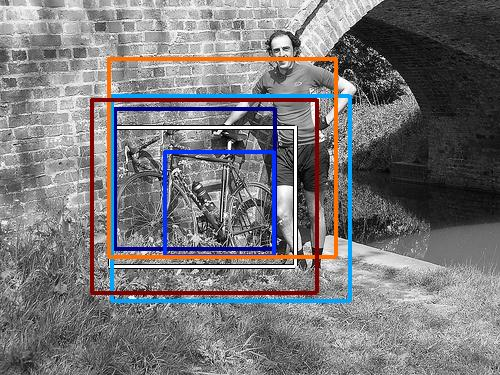
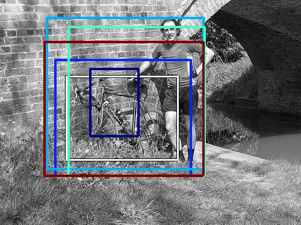

0.429887

0.463087

0.467803

0.492404

0.500338

0.501361

0.542117

0.550518

0.553026

0.560660
| Target image | 0.429887 | 0.463087 | 0.467803 | 0.492404 | 0.500338 | 0.501361 | 0.542117 | 0.550518 | 0.553026 | 0.560660 |
Target image |  2602.889893 |  1966.977661 |  1956.854126 |  1796.417847 |  1787.111816 |  1708.942383 |  1635.213379 |  1625.017700 |  1580.714111 |  1496.808838 |
Target image |  2403.458252 |  2029.385620 |  1897.307251 |  1626.731689 |  1614.941406 |  1584.498047 |  1458.615479 |  1447.152344 |  1442.133301 |  1410.421875 |
| Target image  |  2326.472900 |  2224.900146 |  2172.972900 |  2032.023193 |  2004.341309 |  1899.781738 |  1898.160034 |  1831.255005 |  1777.726929 |  1733.370605 |
| Target image  |  2551.153320 |  1953.559814 |  1813.887939 |  1685.577637 |  1593.342285 |  1586.455688 |  1549.300293 |  1525.365234 |  1523.114380 |  1519.400879 |